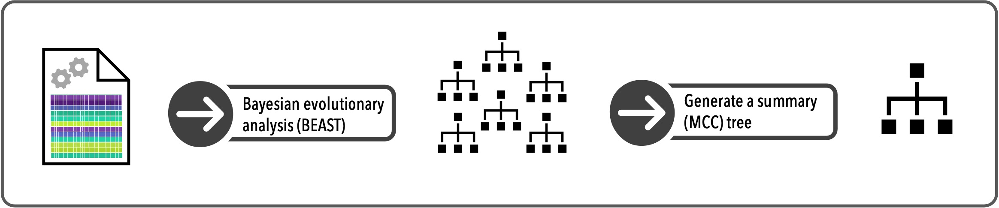

6 Species limits
After speciation, we would expect species to become increasingly different from one another through the passage of time. We might expect these differences to accumulate at an equal rate among several axes of divergence: in their genome (molecular), in their physical appearance (morphology), and in their behavior. Essentially, we would predict a positive correlation between the time to a most recent common ancestor and the degree of molecular, morphological, and behavioral divergence between different species. But as typically happens in biology, this is not always the case.

Most recent common ancestor
6.1 Cryptic genetic diversity
As biologists started to sequence DNA and estimate phylogenetic relationships among individuals identified as belonging to the same species, patterns started to emerge suggesting the presence of deeper genetic divergence than one would expect within a species. This pattern has been observed across many groups from the tree of life, and is often the case for groups that have limited dispersal ability and are found in regions with complex geological histories and geographic landscapes. In particular, groups like mygalomorph spiders (e.g., tarantulas, trapdoor spiders, purseweb spiders) and salamanders typically harbor extensive population structure, reflecting their limited dispersal abilities and often specific habitat requirements. Interpreting these structured genealogical patterns becomes even more challenging when the group of interest looks and behaves in a similar way. In particular, when a species is described based on morphology (i.e., they all share a physical appearance suggesting a single species), yet harbors extensive population genetic structure (i.e., they are genetically distinct from one another), we are left with this question–how many species do these individuals represent? This question has no simple answer.

Hadronyche venenata (Mygalomorphae, Atracidae) from Tasmania. Mygalomorph spiders (e.g., tarantulas, trapdoor spiders, and kin) are often morphologically conserved at shallow, phylogenetic levels leading to considerable cryptic species diversity. Photos by Jordan Satler
With increased sequencing effort across the tree of life, the finding of cryptic genetic diversity within what is often described as a single species (usually based on morphology) is becoming increasingly common. This result raises multiple questions. In particular, is this cryptic genetic diversity indicative of the presence of multiple cryptic species (species that look similar but are genetically distinct), and if so, what are the processes that have produced species that look and behave the same, yet are genetically distinct?
When we uncover cryptic genetic diversity, we want to know what that means for species-level biodiversity. Because species are the fundamental unit of analysis for studies spanning evolutionary biology and ecology, it is critical we first know what the species are. And although we often think of species as being defined units where the axes of divergence have been growing linearly through time, processes generating divergence and speciation vary across the tree of life. As such, and especially at the earliest stages of speciation, we are often working in these grey areas where it is unclear if genetic divergence reflects within population-level patterns or between species-level patterns. Methods and approaches are available for investigating what cryptic genetic diversity means for the speciation process and for the question of how many species are present – we outline several of these approaches below.
6.2 Genetic clustering
Genetic clustering methods provide useful approaches for estimating the number of species in a set of sampled individuals. Because we consider these methods to be discovery approaches, we can test, without any prior knowledge, how many species our samples represent, and how the individuals are partitioned into species. Clustering methods are non-tree-based approaches that typically use a model to estimate which genetic cluster each individual most likely belongs. We can think of these approaches as starting with some number of genetic clusters, and asking, for each sampled individual, which genetic cluster is most likely to produce an individual with that genetic fingerprint. Thus, these methods group individuals into genetic clusters based on similarity in their genetic composition.
Two of the most popular genetic clustering methods are Structure (Pritchard et al. 2000) and Structurama (Huelsenbeck et al. 2011). Both are model-based approaches based on Hardy–Weinberg equilibrium, with the goal being to group individuals into genetic clusters by maximizing Hardy–Weinberg equilibrium within each cluster. When specifying a set number of clusters (represented as K), we can ask how our sampled individuals are drawn genetically from these different clusters. We can restrict our model to only allow individuals to be drawn from a single cluster, or we can allow individuals to be representative of multiple clusters. In the latter case, we account for processes like hybridization and admixture, where species are exchanging genetic material on some level, which may be a better reflection of the biological processes generating our current species diversity.
6.2.1 Structure
Structure is the most popular genetic clustering method used by the scientific community (the original paper has 31,142 citations! Google Scholar, 12 May 2021). Implemented in a Bayesian framework, the user first sets the number of genetic clusters (K) and then estimates which cluster(s) could generate each individual’s genetic fingerprint. A popular approach for species delimitation is to analyze a data set at multiple K values, for example, in a set of 20 individuals, we could run the analysis estimating between two and ten genetic clusters. Then we can use different statistics to estimate the optimal number of genetic clusters and for example, if we determine that the optimal number for K is equal to four, we would say that, based on Structure, we estimate there are four species in our data set, We can then determine how the individuals are partitioned among those species. Although determining the number of K clusters with Structure is challenging and the robustness of the statistical basis is debated, this type of approach provides an estimate as to how many species represent our sampled data set.
6.2.2 Structurama
Another clustering approach is implemented in Structurama. This method is appealing because instead of telling the program how many clusters we want to estimate, we can treat K as a random variable, and have the program estimate the optimal number of clusters for our data set. This is statistically sound and a preferred approach if we are unsure as to how many species our data set represents.
Although originally developed to identify population structure within species, clustering approaches have been useful for identifying potential species-level biodiversity within a group of interest. In particular, we can use these methods to try and identify all possible species present within a data set. We can then directly test these potential species with additional methods, and see if our initial results are validated, or we can use other methods to see if they generate similar results on what we think the species are in our group. If we observe congruence across methods, this would suggest what we consider to be our species are good estimates; if methods provide incongruent results, we should explore why results might differ across methods and which methods might be inappropriate (maybe there are model violations?) for our data set.
Clustering
6.3 Tree-based methods
As opposed to genetic clustering, we can use phylogenetic trees to estimate the number of species present in a genetic dataset. These methods take into account the evolutionary history of a group, and not just simply sequence divergence, as in the clustering methods.
6.3.1 General mixed Yule Coalescent (GMYC)
We can use the information present in a phylogeny to address the question of how many species. In particular, we can use our expectations of the different processes that generate branching patterns in a gene tree to estimate how the tips of the tree—our sampled individuals—should be clustered into species. This is because macroevolutionary processes like speciation and extinction have different expectations for the timing of branching events as opposed to microevolutionary processes operating within a species. Developed by Pons et al. (2006), this approach is called the general mixed Yule coalescent (GMYC) model.
The GMYC model estimates when between species (interspecific) branching events transition to within species (intraspecific) branching events. Given a set of gene sequences from a group of individuals, we can use this model to generate expectations of how many species are in our data set and how those individuals are clustered into species. For groups of organisms that are poorly known (i.e., understudied groups) or lack morphological or behavioral differences (i.e., cryptic), this can be a useful approach for estimating species diversity. If we want to know what processes are important for contributing to speciation and extinction, for understanding how reproductive isolation evolves, and for understanding what shapes species’ distributions, we need to know what the species are. The GMYC can be a useful model for addressing this question.
Originally implemented in a Maximum Likelihood framework, the GMYC model has since been extended to a Bayesian framework to account for uncertainty in our gene tree estimates (Reid & Carstens 2012). In addition, while the GMYC model tests for the single transition point between interspecific and intraspecific branching patterns, the model has also been extended to allow for multiple transitions in the branching patterns within a gene tree (Monaghan et al. 2009). Thus, if the speciation process has occurred at different times among the sampled species, allowing multiple transitions might better capture the processes generating species-level biodiversity.
Although the GMYC model is straight-forward to implement and can be useful for estimating species diversity, there are several potential issues that might mislead us in our attempt to address the question of how many species. For example, if a species contains considerable population structure, likely in dispersal-limited organisms (think small things that have to stay wet, like salamanders), the model can have trouble determining when the transition in branching patterns takes place. This is because population genetic structure looks similar to phylogenetic structure, and the lack of an obvious transition in branching patterns cannot be accurately detected by the model. But the important thing when using this approach—and any model-based method in general, is to be aware of the model assumptions and understanding when you might be misled, and why.
GMYC. A threshold is determined on this phylogenetic tree and all splits in the tree before this line are considered speciation events.
In general, the GMYC model is useful for estimating species-level biodiversity and is often an important first step when working on poorly known groups (e.g., insects, arachnids) and in regions (e.g., tropics) where species diversity for the group of interest has received little or no taxonomic attention. And because we can generate mitochondrial DNA sequence data from any animal, and use those data to estimate a gene tree, we can use this model as a first step for addressing the question of how many species.
6.4 Practice
This module is designed to walk you through the steps of species delimitation using the Generalized Mixed Yule Coalescent, also known as GMYC.
This module will walk you through the process of using GMYC to perform species delimitation on a set of named species using genetic information from a single gene. For this exercise, we’ll focus on the following steps: 1) preparing your data, 2) generating a phylogenetic tree, and 3) using that tree to perform species delimitation under the GMYC.
In this example, we’ll be looking at several formally named shrew species of the genus Sorex.
Before beginning, make sure you have all of the packages required for this module, and then load the libraries.
#load necessary packages
library(beautier)
library(beastier)
library(ape)
library(phangorn)
library(splits)
library(Biostrings)
library(DECIPHER)IMPORTANT: Before running any of the code below, make sure to tell R which working directory (i.e., folder) you want to work from.
6.4.1 Data Preparation
6.4.1.1 Create a multi-species alignment
In this module we’ll use data from multiple species. Automated species delimitation methods, such as GMYC, can be done using single-species datasets, but they tend to perform better on datasets containing more than one species (Dellicour et al. 2015). We are working from a folder called “phylogatr-results-species”, which contains the data downloaded from PhylogatR. We are going to import genetic sequence data from the gene CYTB for several shrew species of the genus Sorex.
First, we need to store the path names of all of the fasta files for our chosen gene. Make sure pattern is set to the name of the gene you want to use. Here, we’ll generate a list of paths to all of the fasta files for the gene CYTB (i.e., all files within phylogatr-results that end in CYTB.fa) using the function list.files and store this list in R as the object myfiles.
We can then use the basename() function to determine which species have data for our selected gene, CYTB. Here, we can see that our new dataset will contain CYTB data from 5 shrew species.
#get paths to CYTB fasta files in species folders (all CYTB.fa files in "phylogatr-results" folder)
myfiles<-list.files(path = "phylogatr-results-species", pattern="CYTB.fa", recursive = TRUE, full.names=TRUE)
#list species in dataset
basename(myfiles)## [1] "Sorex-bendirii-CYTB.fa" "Sorex-cinereus-CYTB.fa"
## [3] "Sorex-monticolus-CYTB.fa" "Sorex-palustris-CYTB.fa"
## [5] "Sorex-vagrans-CYTB.fa"Next, we will use the lapply() function to read the DNA sequences from each of our selected fasta files into R and then use the do.call function to combine all of the sequences into a single object, which we’ll store in R as fa_seq.
#import each fasta file and put them into a list
fa_seq = lapply(myfiles, readDNAStringSet)
#combine all sequences in the list into a single object
fa_seq = do.call(c,fa_seq)Now that we have an object containing all of the CYTB sequences for each of our selected species, our next step is to align the sequences (i.e., arrange them to identify regions of similarity).
First, we’ll prepare our data for alignment by removing any gaps in the DNA sequences using the RemoveGaps function. Then, we can align the sequences using the AlignSeqs() function and store this alignment in R as the object align_seq. We’ll also save this alignment in our working directory as the file align_seq.afa.
#remove any sequence gaps
fa_seq <- RemoveGaps(fa_seq,
removeGaps = "all")
#align the sequences
align_seq <- AlignSeqs(fa_seq)
#save the new alignment as an aligned fasta file (al_seq.afa) in the "phylogatr-results" folder
writeXStringSet(align_seq,
file = "align_seq.afa", append = FALSE)6.4.1.2 Create BEAST input file (xml file)
Next, we need to convert our newly created sequence alignment into a format able to be analyzed by BEAST (i.e., an xml file). A BEAST xml file contains everything needed for a BEAST analysis, including the genetic data we want to analyze as well as instructions on how we want the analysis to be run. When generating a BEAST xml file, we have the option to edit these instructions by changing certain settings in the file.
To create a BEAST xml file, we’ll use the create_beast2_input_file function from the R package beautier. The argument input_filename directs R to your sequence alignment file, while output_filename tells R what to name the output file and where to put it. We’ll set input_filename to the name of our alignment file, “align_seq.afa”, and we’ll set output_filename as “beast_input.xml” to have R save the new xml file in our “phylogatr-results’ folder as”beast_input.xml". Run the following code to generate an xml file from your sequence alignment, using BEAST’s default parameters.
#generate an xml file (default parameter settings)
create_beast2_input_file(
input_filename = "align_seq.afa",
output_filename = "beast_input.xml")6.4.1.2.1 So many settings!
The following examples demonstrate how parameter values can be adjusted to set properties such as model of nucleotide substitution and proportion of invariant sites in your xml file. If you want to stick with the default parameter settings1, proceed to the next section.
As you can see in the code above, the only parameters we defined when creating our xml file were input_filename, which is the location of our sequence alignment file, and output_filename, which is what we want to name our output xml file. These are just two of many parameters that we can adjust when creating xml files through the create_beast2_input_file function. Additional parameters include site_model, clock_model, tree_priors, and mrca_prior, among others. More information on setting xml file parameters can be found here.
Example 1: By adding the argument site_model = create_jc69_site_model() to the previous function, we can use our sequence alignment to generate an xml file using the JC69 substitution model. Note that while input_filename stays the same, we’ll change output_filename to “beast_input_jc69.xml”, so that our previous file doesn’t get overwritten.
#create xml file (JC69 substitution model)
create_beast2_input_file(
input_filename = "align_seq.afa",
output_filename = "beast_input_jc69.xml",
site_model = create_jc69_site_model())Example 2: This time we’ll generate an xml file using the HKY85 model and save it in our “phylogatr-results” folder as “beast_input_hky.xml”. We’ll set our substitution model to HKY by adding the argument site_model = create_hky_site_model. We can also change the proportion of invariant sites by specifying the value of prop_invariant under the gamma_site_model argument.
#create xml file (HKY substitution model and prop invariant = 0.3)
create_beast2_input_file(
input_filename = "align_seq.afa",
output_filename = "beast_input_hky.xml",
site_model = create_hky_site_model(
gamma_site_model = create_gamma_site_model(prop_invariant = 0.3)))6.4.2 Generate a Phylogenetic Tree

6.4.2.1 Bayesian evolutionary analysis (BEAST)
Now that we have our genetic data stored in an xml file, we can use the program BEAST to infer a set of evolutionary trees, based on our data. To do this, we’ll use the function run_beast2(). Set the argument input_filename to the name of the xml file you want to use and run the code below.
Note that, depending on the number of species included, this analysis may take longer to complete. You can track the progress of your analysis using the output written to the screen.
#run BEAST using your previously generated xml file
run_beast2(
input_filename = "beast_input.xml")When the analysis is complete, BEAST will create two new files in your working directory. We will use the align_seq.trees file in the next step of this module.
6.4.3 Create a summary tree
BEAST gives us a set of evolutionary trees inferred from our genetic data. However, we can only use a single tree for species delimitation (under GMYC), so we need to generate a summary tree. There are several different approaches to summarizing trees, which you can learn more about here. We’ll use a Maximum Clade Credibility (MCC) tree to summarize our BEAST results.
First, load your align_seq.trees file into R using the read.nexus function, and save it as the object trees. Then use the function maxCladeCred to generate an MCC tree from trees, and the resulting summary tree in R as mcc_tree.
#load newly generated .trees file into R
trees <- read.nexus(file = "align_seq.trees")
#generate an MCC summary tree
mcc_tree <- maxCladeCred(trees, tree = TRUE, part = NULL, rooted = TRUE)6.4.4 Species Delimitation
6.4.4.1 Generalized Mixed Yule Coalescent (GMYC)
Now that we have a summary tree, we’re finally ready for species delimitation! To do this, we’ll use the function gmyc to perform GMYC species delimitation on our recently created summary tree (mcc_tree). Our results will be stored in R as the object my_gmyc.
#run GMYC species delimitation
my_gmyc <- gmyc(mcc_tree, method = "single", quiet = TRUE)6.4.4.2 Evaluate your results
Let’s take a look at our results! We can access our GMYC results by using the summary() function, as shown below. The resulting output gives us the number of species delimited from our dataset and the significance of our GMYC model.
So, how many species did our analysis identify? To answer this question, we’ll turn to the number of ML entities and the number of ML clusters listed above.
- number of ML entities: the total number of species identified
- number of ML clusters: the number of species identified that contain two or more samples (sequences)
- result of LR test: can be used to estimate model significance
In this example, we can see that GMYC identified 4 distinct clusters and 7 distinct entities from our dataset containing 18 named species of shrew.
#get a summary of GMYC results
summary(my_gmyc)## Result of GMYC species delimitation
##
## method: single
## likelihood of null model: 2042.43
## maximum likelihood of GMYC model: 2054.566
## likelihood ratio: 24.27266
## result of LR test: 5.36115e-06***
##
## number of ML clusters: 15
## confidence interval: 10-29
##
## number of ML entities: 22
## confidence interval: 11-37
##
## threshold time: -0.004094423NOTE: Relevant output values are highlighted above, but see here and here for a more detailed explanation of how to interpret GMYC results.
How do we know which sequences have been assigned to which species? To create a table listing sequence-species associations, we can use the spec.list function. Each entry in the resulting table represents an individual sequence in our dataset.
- sample_name: the sequence’s PhylogatR ID
- GMYC_spec: species the sequence has been assigned to
#get species assignments for each individual
spec.list(my_gmyc)6.4.4.3 BONUS: Are my results supported?
Congrats - you’ve made it through the process of GMYC species delimitation!
So, what’s next? Once you have your species delimitation results, it’s important to evaluate whether or not your results are supported. While the likelihood values included in our GMYC results can be used to evaluate overall support for our species delimitation model, we can also look at how that support is spread across our evolutionary tree.
The following code can be used to estimate support values for the branches of our summary MCC tree. The higher the support value, the more confidence we can have in the particular relationship it represents. It’s wise to be wary of areas in your tree with lower support values, as they may indicate a lack of signal or conflicting signal in the data that prevents us from making meaningful inferences about those particular evolutionary relationships.
#estimate support values
yule_support <- gmyc.support(my_gmyc)
#only plot relevant support values
is.na(yule_support[yule_support == 0]) <- TRUE
#plot tree and support values (NOTE: run both these lines of code at the same time)
plot(mcc_tree, cex=.6, no.margin=TRUE)
nodelabels(round(yule_support, 2), cex=.7) We can also look at how our delimited species are spread geographically. Run the code below to combine your GMYC delimitation results with their associated geographic occurrence data to visualize how your species are spread across the globe. In the resulting figure, each delimited species is assigned a to a unique color and individuals are plotted according to their collection locality.
#load required packages
library(tools)
library(ggplot2)
library(maps)#save GMYC species delimitation results and occurrences
spec_delim<-spec.list(my_gmyc)for (f in myfiles) {
sp <- basename(f)
sp <- file_path_sans_ext(sp)
s <- sub("/[^/]+$", "", f)
c <- paste(s, "/occurrences.txt", sep="")
occurrences <- read.delim(c)
xy_id <- occurrences[,c(1,5:4)]
write.table(data.frame(sp, xy_id), file="d_occur.csv", quote=FALSE, row.names=FALSE, col.names=!file.exists("d_occur.csv"), append=TRUE, sep=",")
}#read in occurrence data from PhylogatR
occurrences<-as.data.frame(read.table("d_occur.csv", header=TRUE, sep = ","))
#merge occurrences and species delimitation results
merge<-merge(spec_delim, occurrences, by.x = "sample_name", by.y = "phylogatr_id")
#plot species groups on map
world<-map_data("world")
ggplot()+
geom_polygon(data = world, aes(x=long, y = lat, group = group), fill = "lightgrey", color = "gray30", size = .25)+
coord_fixed(1.3)+
xlab("Longitude")+
ylab("Latitude")+
ggtitle("GMYC Species Delimitation Results")+
geom_point(data = merge, aes(x = as.numeric(longitude), y = as.numeric(latitude), color = factor(GMYC_spec)), size = 0.3)+
labs(color = "GMYC species")